TREATS Logo
The three vibrant shapes symbolize that every child is unique, representing the importance of an inclusive and diverse society.

Established in 1979, TREATS is a registered charity (exempt from tax under section 88 of the Inland Revenue Ordinance) and a non-governmental organization in Hong Kong. We are also a member of the Community Chest of Hong Kong and the Hong Kong Council of Social Service.
Through TREATS’ social inclusion programmes – which combine education, life experience and social exposure – children and youth of all abilities and backgrounds are given an equal opportunity to participate in society, learn about diversity, unlock possibilities and achieve their potential.
We develop social skills and build the confidence of our participants, bridging social gaps for the disadvantaged by expanding their network and creating new opportunities for their development.
We transform the public’s perception of people with different abilities and backgrounds through community education and participation, thereby increasing the chance of a more equal, diverse and inclusive society.
We target all children and youth, especially those:


TREATS has been serving children and teenagers in Hong Kong for 40 years, with the vision of building an inclusive society for ALL children. Throughout the 1980s, we gave ‘treats’ to Vietnamese refugee children, and Hong Kong children living in crowded resettlement estates, promoting the value of recreation and play. In 1990s, we started organizing Outdoor Inclusive Programmes and Youth Development Projects, which aim to connect children and youth with different abilities and backgrounds in Hong Kong. Entering the new millennium, TREATS has been providing diverse social-inclusion-services with an interactive and equal platform, ranging from Education, Community Exploration and Social Exposure Programmes, to youth with different abilities and backgrounds. Annually, around 158,500 children and teenagers benefited from TREATS’ inclusive services on average.

TREATS began in 1979, the International Year of the Child, in response to the arrival of thousands of Vietnamese refugees following the end of the Vietnam War. Known as ‘boat people’, they were given temporary refuge in hastily created, overcrowded closed camps. Concerned about the lack of recreational opportunities for these children, a group of private individuals arranged outings – or ‘treats’ – to beaches, recreation camps and Ocean Park. They then turned their attention to local children, providing the same opportunities for children living in crowded resettlement estates. The first logo of TREATS was a kite, symbolizing that all children enjoy having fun, making friends, and playing.
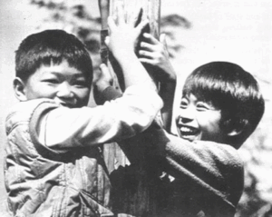
Throughout the 1980s we continued giving ‘treats’ to Vietnamese refugee children, as well as Hong Kong children living in crowded resettlement estates, promoting the value of recreation and play. The largest part of our budget was spent on sending children to overnight recreation camps in the New Territories, which were then still open countryside, or for a day at sea on the Adventure Ship. We also started outings for children from special needs schools, which included a visit to Walt Disney on Ice and a visiting circus.
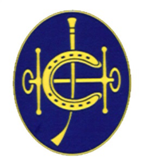
TREATS recognized that the right of those with physical, mental and behavioural challenges to take part in life and to be accepted members of the community was not being met. Accordingly, TREATS introduced a programme of youth development services with an emphasis on integrating children with different abilities through recreation and play. TREATS received its first sponsorship from the Hong Kong Jockey Club for this programme, which became our signature programme, paving the way for our inclusive programmes in later years.
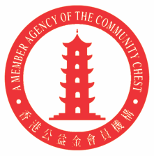
In 1995, the Hong Kong Community Chest began funding our Youth Development Project. The project trained mainstream students and those with disabilities to work as a team, promoting community awareness about social inclusion and children’s rights.
TREATS introduced a collaborative community project to raise awareness, understanding and acceptance of people with disabilities in the wider community.
With the gradual closure of the detention centres, TREATS ended our 19 years of service to these children.

To further connect with their local communities, children and teenagers with various abilities were grouped as ‘buddies’ to participate in different community activities. The programme developed the participants’ awareness, confidence, social skills and life skills. It also reduced social isolation and changed attitudes towards people with disabilities.

TREATS began establishing partnerships with businesses to promote social inclusion and volunteering and build a more inclusive society and workplaces. Each year, TREATS worked with 30 business partners to create a better society for children in Hong Kong.
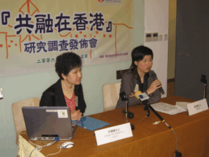
TREATS commissioned the Child Development Center of the Hong Kong Baptist University (HKBU) to conduct a local study on social integration – the first of its kind in Hong Kong. The “Integration in Hong Kong” research provided many valuable insights, allowing TREATS to adopt a more evidence-based approach.
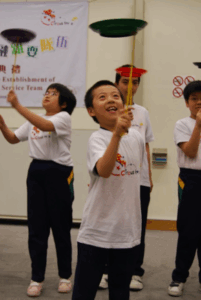
TREATS set up the first circus team in Hong Kong made up of children with disabilities and corporate volunteers. The project aimed to enhance the self-image and confidence of these children by teaching them to juggle. The children performed at various community events, showing the people of Hong Kong that it is possible to juggle, whatever your ability.
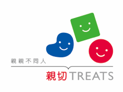
In 2007 we redesigned our vision, mission and logo, with a new image symbolizing TREATS’ passion for embracing diversity and our commitment to building an inclusive Hong Kong for all children.
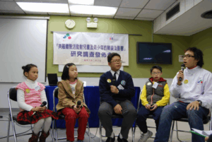
TREATS commissioned the Center for Child Development of HKBU to conduct another study on the “Impact and Effect of Integration Experiences on the Young Generation of Hong Kong”. The research findings and results proved that TREATS’ social inclusion programmes were effective in altering perspectives, building confidence in young participants and bridging social gaps for underprivileged groups in Hong Kong.
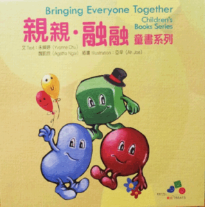
In 2011, TREATS published our first set of children’s books targeting kindergartens in Hong Kong. The Bringing Everyone Together series, coupled with our storytelling workshops, help create a caring future generation.
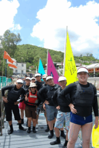
TREATS’ first Sailing for ALL teams were made up of teenagers with disabilities and volunteers. Team members learnt the skills of sailing together, before taking part in races at sea. The team came second in the Sailability Group in the 24HR Charity Dinghy Race in Hong Kong.

The Youth Mentoring and Work-based Learning Project for Underprivileged Youth enabled teenagers with different abilities or from ethnic minority groups to gain new skills. They learnt through actually working in different business enterprises. It also encouraged businesses in Hong Kong to embrace an inclusive and diverse workplace culture.
Sport is a universal language and a wonderful way to break social barriers, build confidence and learn about teamwork. TREATS’ Inclusive Dragon Boat Team, which consisted of students with intellectual disabilities and volunteers, received intensive training before racing in the Sai Kung Dragon Boat Festival 2019.
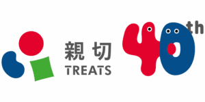
The year 2019 marked TREATS’ 40 years of service in Hong Kong. We celebrated this occasion with a new image, which also signifies the start of a new phase for TREATS.

In January 2020, TREATS organized the first Hong Kong Inclusive Kin-ball Cup. We believe that everyone, regardless of their ability or background, should be able to participate in sports. Each kin-ball team is made up of teenagers with disabilities and volunteers. Through kin-ball training and playing in matches, they break down social barriers and learn about teamwork and partnership. This emerging sport is played in more than 30 countries and is known as a way to enhance social inclusion for people with disabilities.
TREATS’ Inclusive Sailing Race 2020 was the first in Hong Kong which incorporated the theme of inclusion into a sailing competition. A total of 11 teams comprised of youth with special needs and mainstream volunteers joined the race, showcasing how youths with different backgrounds and abilities can unleash their potential.

The project combined gamified sports training, skills empowerment and career opportunities for ethnic minorities youths in Hong Kong. It also helped maximize their exposure and participation in local communities.
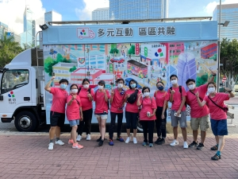
This was the first time TREATS Inclusive Journey was presented in the form of an Inclusive Experiential Game Truck, where it travelled to different communities and schools around Hong Kong to spread the message of social inclusion – ‘’Equal Participation’’, ‘’Appreciation’’ and ‘’Acceptance’’.

Custom-designed for primary students, it combined the elements of role-playing, strategic planning, adventure and problem solving. The game provided students with a new inclusion education experience by enhancing creativity, team communication and problem-solving skills.
Locations and routings included in this comprehensive information guide are accessed by a set of inclusive indicators in terms of accessibility, diversity and reachability. This allows families with different backgrounds and abilities to plan and design their own activities and routing according to their interests and needs.

Co-organized by TREATS and Hong Kong Baptist University, this Conference featured 15 speakers from various fields to share their innovative ideas and effective practice models on social inclusion and creative education for children and youth with all abilities and backgrounds.
TREATS launched the Scheme aiming to recognize and support local youths with different abilities and backgrounds to pursue their aspirations in different aspects. By unleashing awardees’ potentials and talent through learning and development opportunities, they are empowered for their full participation in society.

TREATS held the race aiming to provide a platform for inclusive dragon boat teams in Hong Kong to challenge themselves and showcase their talents.

TREATS launched the “Student Facilitator Scheme” , aiming to provide ethnic minority youth with internship opportunities in social service organizations and help them develop various job skills. The project targets high school or college students who are committed to the values of social inclusion, are enthusiastic, and aspire to work in social services. TREATS offers relevant training and internship opportunities, preparing participants for future roles in mainstream workplaces through real work experiences.

TREATS celebrated its 45th anniversary, marking decades of supporting children and youth of diverse abilities and backgrounds. We unveiled a new logo to reflect our continued commitment to inclusion and launched “45 Stories One TREATS”, featuring stories of growth and transformation from 45 individuals who have journeyed with us, and reflecting the impact TREATS has made for disadvantaged children in Hong Kong over the past 45 years.

For the first time, overseas teams were invited to the Hong Kong Inclusive Kin-Ball Cup. Marking the 5th anniversary of the Hong Kong Inclusive Kin-Ball Cup, teams from Taiwan were invited to Hong Kong for friendly matches and exchange, extending the spirit of inclusion beyond borders and fostering cross-regional learning.
Following the competition, a seminar “Conference on Strategies and Practices for Inclusive Sports in Hong Kong and Taiwan” was held to facilitate exchange between teams and share practical approaches to promoting social inclusion through inclusive sports.
TREATS is a member of the following organizations: